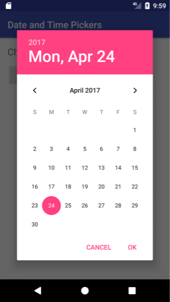

This is the first part of android MVVM(Model-View-ViewModel) implementation tutorial that will cover only UI implementation portion with no ViewModel or Model involved.
For complete detail about this tutorial, see the MVVM tutorial
nanoUbimemes
If you run into any issues (code bugs, grammatical errors, unclear wording, etc.) as you work through this codelab, please report the issue via the ‘Report a mistake' link in the lower left corner of the codelab.
Android app's UI consists of at least one Activity and Fragments. A Fragment is a self-contained component with its own user interface (UI) and lifecycle that can be reused in different parts of an app's UI. (A Fragment can also be used without a UI, in order to retain values across configuration changes, but this tutorial does not cover that usage.)
A Fragment can be a static part of the UI of an Activity, which means that the Fragment remains on the screen during the entire lifecycle of the Activity. However, the UI of an Activity may be more effective if it adds or removes the Fragment dynamically while the Activity is running.
One example of a dynamic Fragment is the DatePicker object, which is an instance of DialogFragment, a subclass of Fragment. The date picker displays a dialog window floating on top of its Activity window when a user taps a button or an action occurs. The user can click OK or Cancel to close the Fragment.

However, with using Navigation Component, it is suggested to build an app with only one Activity with fragments in order to let Navigation Contoller handle the navigation. Especially for beginners it will be a good appoach to start and this tutorial is also follow the recommendation.
building a view only - no data is attached at this step You'll learn about Navigation Component
What you should already know
You should be able to:
- Create and run apps in Android Studio.
- Use the layout editor to create a UI with a ConstraintLayout
What you'll learn
- Add a Fragment to the layout of an Activity
- How to create Navigation XML
- How to make Fragments linked together
- How to use Navigation Controller
What you'll do
- Create an Activity as a main UI container.
- Create Fragments to use as a UI element.
- Add interactive elements to the Fragments that users can navigate among them
- Add a RecyclerView to a fragment to show list data.
With this tutorial, you'll build an app looking like below. 
You'll build it with one Activity and three Fragments and taste of Navigation Component.
To use Navigation Component in Kotlin, you need to add dependency to build.graddle under app folder not the one under your project root folder. Kotlin version of navigation-fragment will look like below.
def nav_version = '2.3.0-alpha01' // define the version of navigation-fragment
...
implementation "androidx.navigation:navigation-fragment-ktx:$nav_version"
Your build.gradle file looks like below.
dependencies {
def nav_version = '2.3.0-alpha01'
implementation fileTree(dir: 'libs', include: ['*.jar'])
implementation "org.jetbrains.kotlin:kotlin-stdlib-jdk7:$kotlin_version"
implementation 'androidx.appcompat:appcompat:1.0.2'
implementation 'androidx.core:core-ktx:1.0.2'
implementation 'androidx.constraintlayout:constraintlayout:1.1.3'
implementation 'com.google.android.material:material:1.0.0'
// Kotlin
implementation "androidx.navigation:navigation-fragment-ktx:$nav_version"
implementation 'androidx.legacy:legacy-support-v4:1.0.0'
implementation 'androidx.lifecycle:lifecycle-extensions:2.0.0'
implementation 'androidx.lifecycle:lifecycle-viewmodel-ktx:2.0.0'
testImplementation 'junit:junit:4.12'
androidTestImplementation 'androidx.test.ext:junit:1.1.0'
androidTestImplementation 'androidx.test.espresso:espresso-core:3.1.1'
}
Create MainActivity
Android app needs to have at least one Activity. You can create an Activity easily by follow Android Studio's one of the project templates. You'll choose basic activity to focus on understanding MVVM.
You'll also add Navigation Controller to the Activity to let it control your app's navigation.
(그림 - 안드로이드 스튜디오 캡쳐 화면) Based on the version of Android Studio you are using, the generated code may be slightly different but basically it will look like below.
class MainActivity : AppCompatActivity() {
override fun onCreate(savedInstanceState: Bundle?) {
super.onCreate(savedInstanceState)
setContentView(R.layout.activity_main)
}
}
Create XML layout
자동 생성된 layout file (activity_main.xml)을 아래와 같이 수정한다.
Your activity_main.xml file looks like below.
<?xml version="1.0" encoding="utf-8"?>
<androidx.constraintlayout.widget.ConstraintLayout
xmlns:android="http://schemas.android.com/apk/res/android"
xmlns:app="http://schemas.android.com/apk/res-auto"
xmlns:tools="http://schemas.android.com/tools"
android:layout_width="match_parent"
android:layout_height="match_parent"
tools:context=".MainActivity">
<fragment
android:id="@+id/nav_host_fragment"
android:name="androidx.navigation.fragment.NavHostFragment"
app:layout_constraintBottom_toBottomOf="parent"
app:defaultNavHost="true"
app:navGraph="@navigation/main"
android:layout_width="match_parent"
android:layout_height="match_parent" />
</androidx.constraintlayout.widget.ConstraintLayout>
Write a Kotlin class for Main Fragment(MainFragment.kt)
You'll add a ClickListener for a search
val ibtnSearch = view.findViewById<ImageButton>(R.id.ibtnSearch)
ibtnSearch.setOnClickListener{
findNavController(view).navigate(R.id.wordListFragment, null)
}
Your MainFragment.kt file looks like below.
class MainFragment : Fragment() {
override fun onCreateView(
inflater: LayoutInflater, container: ViewGroup?,
savedInstanceState: Bundle?
): View? {
return inflater.inflate(R.layout.frag_main, container, false)
}
override fun onViewCreated(view: View, savedInstanceState: Bundle?) {
super.onViewCreated(view, savedInstanceState)
val ibtnSearch = view.findViewById<ImageButton>(R.id.ibtnSearch)
ibtnSearch.setOnClickListener{
findNavController(view).navigate(R.id.wordListFragment, null)
}
}
}
Create an XML layout for Main Fragment. (frag_main.xml)
<?xml version="1.0" encoding="utf-8"?>
<androidx.constraintlayout.widget.ConstraintLayout
xmlns:android="http://schemas.android.com/apk/res/android"
xmlns:app="http://schemas.android.com/apk/res-auto"
xmlns:tools="http://schemas.android.com/tools"
android:layout_width="match_parent"
android:layout_height="match_parent">
<TextView
android:layout_width="wrap_content"
android:layout_height="wrap_content"
android:text="Korean Dictionary"
app:layout_constraintVertical_bias="0.30"
app:layout_constraintBottom_toBottomOf="parent"
app:layout_constraintLeft_toLeftOf="parent"
app:layout_constraintRight_toRightOf="parent"
app:layout_constraintTop_toTopOf="parent" />
<LinearLayout
android:orientation="horizontal"
android:id="@+id/textInputLayout"
android:layout_width="match_parent"
android:layout_height="wrap_content"
android:gravity="center_vertical"
app:layout_constraintTop_toTopOf="parent"
app:layout_constraintBottom_toBottomOf="parent"
app:layout_constraintLeft_toLeftOf="parent">
<EditText
android:id="@+id/etSearch"
android:layout_width="match_parent"
android:layout_height="match_parent"
android:gravity="center_vertical"
android:imeOptions="actionSearch"
android:text="" />
<ImageButton
android:layout_width="wrap_content"
android:layout_height="wrap_content"
android:id="@+id/ibtnSearch"
android:layout_marginRight="10dp"
android:background="@drawable/ic_search_24px"
android:tint="@android:color/background_light" />
</LinearLayout>
</androidx.constraintlayout.widget.ConstraintLayout>
Write a Kotlin class for Second Fragment(WordList.kt)
class WordListFragment : Fragment() {
private lateinit var adapter: WordListAdapter
override fun onCreateView(
inflater: LayoutInflater,
container: ViewGroup?,
savedInstanceState: Bundle?
): View? {
return LayoutInflater.from(requireActivity()).inflate(R.layout.frag_dic_list, container, false)
}
override fun onViewCreated(view: View, savedInstanceState: Bundle?) {
adapter = WordListAdapter(requireActivity().applicationContext)
val rv = view.findViewById<RecyclerView>(R.id.recyclerview_wordlist)
rv.setHasFixedSize(true)
rv.layoutManager = LinearLayoutManager(context)
rv.adapter = adapter
}
}
You will also need an adapter for recyclerView and it will look like below.
class WordListAdapter internal constructor (
private val context: Context
) : RecyclerView.Adapter<RecyclerView.ViewHolder>(){
inner class ViewHolder(itemView: View) : RecyclerView.ViewHolder(itemView) {
val cardView: ConstraintLayout =itemView.findViewById(R.id.cardView)
}
override fun onCreateViewHolder(parent: ViewGroup, viewType: Int): RecyclerView.ViewHolder {
val inflater: LayoutInflater = LayoutInflater.from(context)
val itemView = inflater.inflate(R.layout.frag_dic_list_item, parent, false)
return ViewHolder(itemView)
}
override fun onBindViewHolder(holder: RecyclerView.ViewHolder, position: Int) {
holder as ViewHolder
holder.cardView.setOnClickListener {
Navigation.findNavController(it)
.navigate(R.id.wordDetailFragment, null)
}
}
override fun getItemCount() : Int {
return 3 // this will be replaced with actual data in next tutorial
}
}
Create an XML layout for 2nd Fragment (frag_dic_list.xml).
<?xml version="1.0" encoding="utf-8"?>
<androidx.constraintlayout.widget.ConstraintLayout android:layout_width="match_parent"
android:layout_height="match_parent"
xmlns:app="http://schemas.android.com/apk/res-auto"
xmlns:tools="http://schemas.android.com/tools"
android:id="@+id/constraintLayout"
xmlns:android="http://schemas.android.com/apk/res/android">
<androidx.recyclerview.widget.RecyclerView
android:id="@+id/recyclerview_wordlist"
android:layout_width="0dp"
android:layout_height="0dp"
app:layout_constraintTop_toBottomOf="@id/textInputLayout"
app:layout_constraintLeft_toLeftOf="parent"
app:layout_constraintRight_toRightOf="parent"
app:layout_constraintBottom_toBottomOf="parent" />
</androidx.constraintlayout.widget.ConstraintLayout>
You will also need an adapter for recyclerView and it will look like below.
<?xml version="1.0" encoding="utf-8"?>
<androidx.cardview.widget.CardView
xmlns:android="http://schemas.android.com/apk/res/android"
xmlns:app="http://schemas.android.com/apk/res-auto"
app:cardBackgroundColor="@android:color/transparent"
android:layout_width="match_parent"
android:layout_height="wrap_content" >
<androidx.constraintlayout.widget.ConstraintLayout
android:id="@+id/cardView"
android:layout_width="match_parent"
android:layout_height="match_parent">
<TextView
android:id="@+id/word"
android:layout_width="wrap_content"
android:layout_height="wrap_content"
android:text="word"
app:layout_constraintLeft_toLeftOf="parent"
app:layout_constraintTop_toTopOf="parent" />
<TextView
android:id="@+id/wdefinition"
android:layout_width="0dp"
android:layout_height="wrap_content"
android:maxLines="3"
android:padding="@dimen/default_padding"
android:text="definition"
app:layout_constraintLeft_toLeftOf="parent"
app:layout_constraintRight_toRightOf="parent"
app:layout_constraintTop_toBottomOf="@+id/word" />
</androidx.constraintlayout.widget.ConstraintLayout>
</androidx.cardview.widget.CardView>
Write a Kotlin class for Third Fragment(WordDetail.kt)
You will use the genetated code as is without a touch.
class WordDetailFragment : Fragment() {
override fun onCreateView(
inflater: LayoutInflater,
container: ViewGroup?,
savedInstanceState: Bundle?
): View? {
return inflater.inflate(R.layout.frag_dic_detail, container, false)
}
}
Create a XML layout for 3rd Fragment (frag_dic_detail.xml)
<?xml version="1.0" encoding="utf-8"?>
<androidx.constraintlayout.widget.ConstraintLayout
android:layout_width="match_parent"
android:layout_height="wrap_content"
xmlns:android="http://schemas.android.com/apk/res/android"
xmlns:app="http://schemas.android.com/apk/res-auto">
<TextView
android:id="@+id/word"
android:text="word"
android:layout_width="match_parent"
android:layout_height="wrap_content"
app:layout_constraintTop_toTopOf="parent" />
<TextView
android:id="@+id/pronunciation"
android:text="pronunciation"
android:layout_width="match_parent"
android:layout_height="wrap_content"
app:layout_constraintTop_toBottomOf="@+id/word"/>
<TextView
android:id="@+id/definition"
android:text="definition"
android:layout_width="match_parent"
android:layout_height="wrap_content"
android:padding="@dimen/default_padding"
app:layout_constraintTop_toBottomOf="@+id/pronunciation"/>
</androidx.constraintlayout.widget.ConstraintLayout>
Let's get the fragments work together.
- Automatic handling of fragment transactions
- Android Studio tooling for visualizing and editing the navigation flow of an app
Create Navigation XML
<navigation xmlns:android="http://schemas.android.com/apk/res/android"
xmlns:app="http://schemas.android.com/apk/res-auto"
app:startDestination="@id/main">
<fragment
android:id="@+id/main"
android:name="com.ubimemes.samples.krdic.MainFragment"
android:label="MainFragment">
<action
android:id="@+id/action_mainFragment_to_wordListFragment"
app:destination="@id/wordListFragment" />
</fragment>
<fragment
android:id="@+id/wordListFragment"
android:name="com.ubimemes.samples.krdic.ui.list.WordListFragment"
android:label="WordListFragment">
<action
android:id="@+id/action_wordListFragment_to_wordDetailFragment"
app:destination="@id/wordDetailFragment" />
</fragment>
<fragment
android:id="@+id/wordDetailFragment"
android:name="com.ubimemes.samples.krdic.ui.detail.WordDetailFragment"
android:label="WordDetailFragment" />
</navigation>
codes Navigations between Fragments
- code to navigate from Main Fragment to 2nd Fragment
ibtnSearch.setOnClickListener{ findNavController(view).navigate(R.id.wordListFragment, null) } - code to navigate from 2nd Fragment to 3rd Fragment
holder.cardView.setOnClickListener { Navigation.findNavController(it) .navigate(R.id.wordDetailFragment, null) } - code to navigate from 3rd Fragment to Main Fragment
Navigation.findNavController(it) .navigate(R.id.mainFragment, null)
- EditText
- some decoration